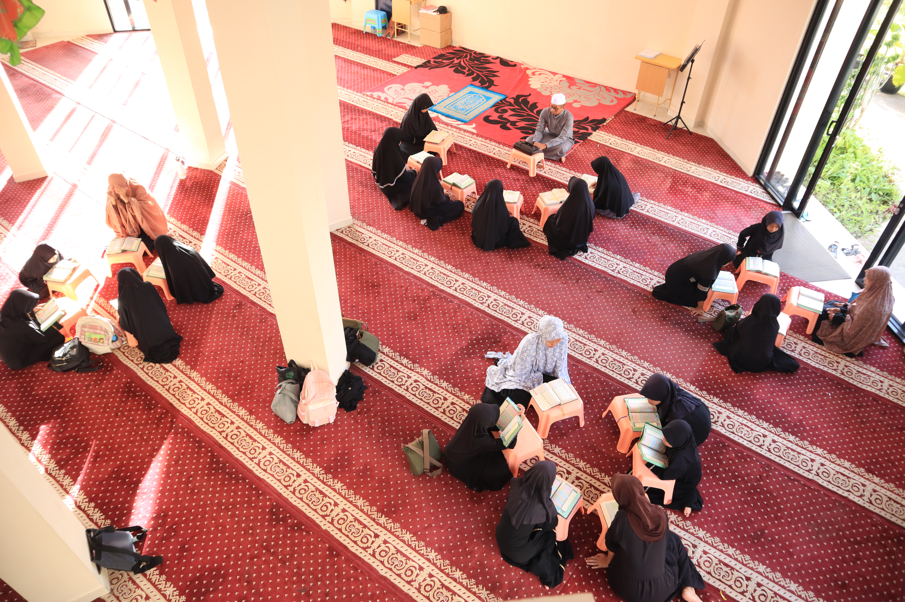
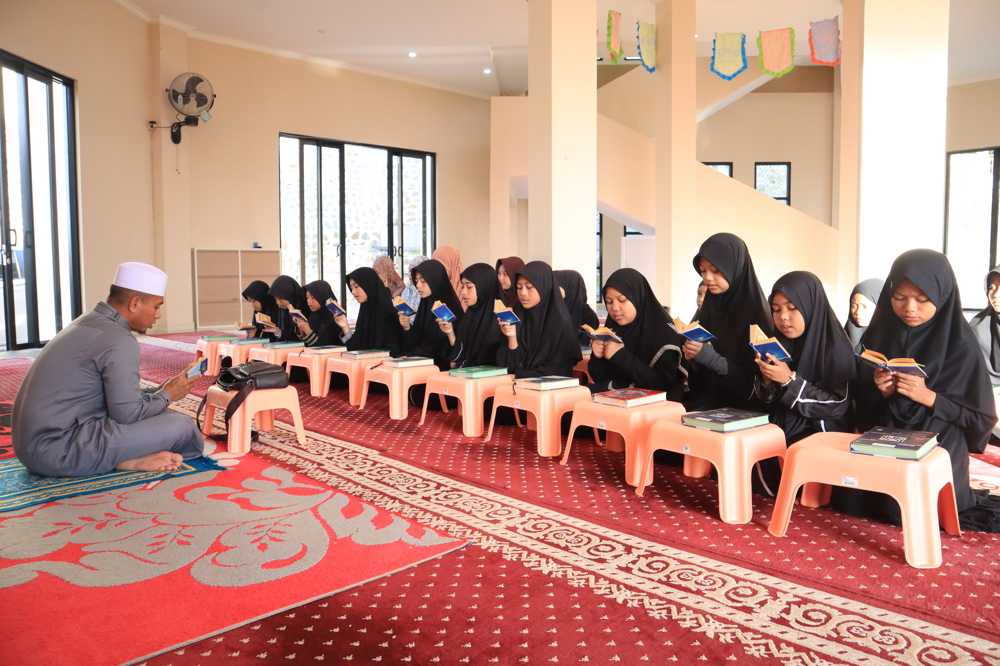
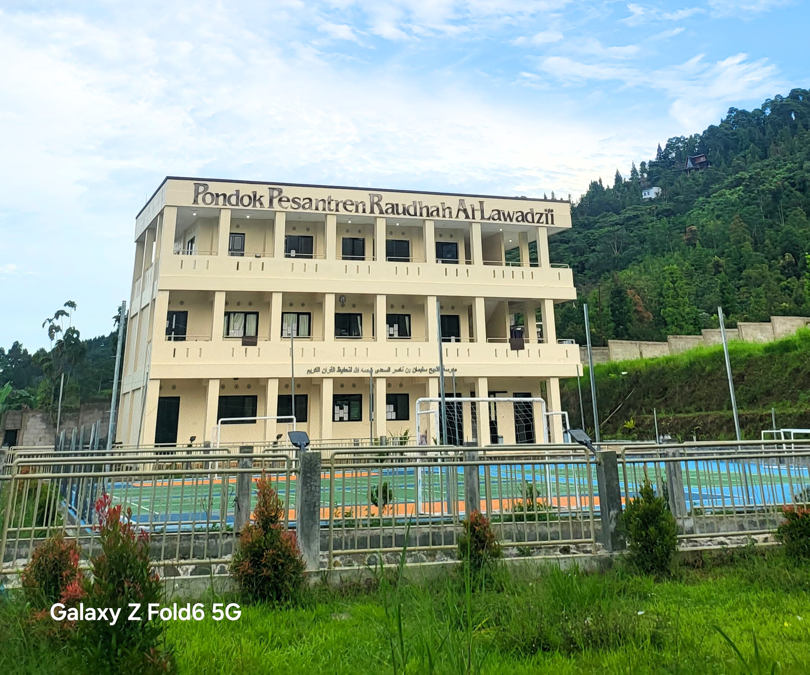
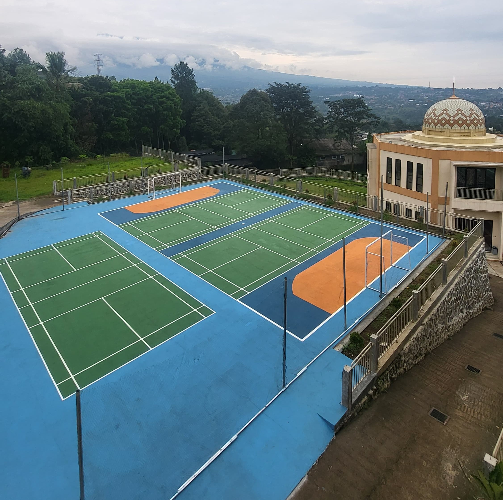

Pondok Pesantren Modern Berbasis Akhlakul Karimah

Pondok Pesantren Raudhah Al-Lawadzi'i menyelenggarakan pendidikan Madrasah Tsanawiyah (MTs) dengan memadukan kurikulum Kementerian Agama dan kurikulum kepesantrenan.
Fokus utama pendidikan adalah pembinaan akhlakul karimah, penguatan hafalan Al-Qur’an dengan metode qiroati, serta pemahaman ilmu-ilmu syariat untuk mencetak santri yang hafizh, faqih, dan berprestasi.
SelengkapnyaMenjadi lembaga unggul yang mencetak generasi qur'ani, faqih, hafidz, kreatif, komunikatif dan berorientasi masa depan
Mencetak Generasi Qur'ani
Mencetak Cendikiawan Muslim yang faqih
Menanamkan Akhlaqul Karimah
Memupuk Kreatifitas dan Kemampuan Komunikatif
Memandu Santri Menuju Masa Depan Gemilang
Program pendidikan utama yang menjadi keunggulan pesantren kami

Program hafalan Al-Qur’an dengan metode mutqin dan bimbingan ustadz berpengalaman.

Pembelajaran kitab kuning untuk memperkuat pemahaman agama dan akhlak santri.

Meningkatkan keterampilan berbahasa aktif (berbicara/kalam) dan pasif (mendengar/istima', membaca/qira'ah, menulis/kitabah).
Program ini bertujuan menciptakan lingkungan belajar aktif yang meningkatkan kompetensi akademik dan keterampilan berbahasa internasional.
Fasilitas penunjang kegiatan santri yang nyaman, aman, dan representatif.

Silakan hubungi kami untuk informasi lebih lanjut seputar Pondok Pesantren Raudhah Al-Lawadzi'i.